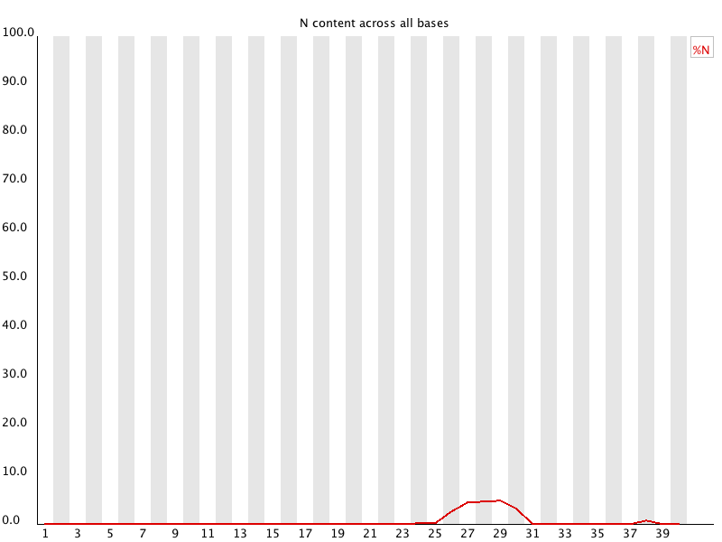

If a sequencer is unable to make a base call with sufficient confidence then it will normally substitute an N rather than a conventional base] call
This module plots out the percentage of base calls at each position for which an N was called.

It's not unusual to see a very low proportion of Ns appearing in a sequence, especially nearer the end of a sequence. However, if this proportion rises above a few percent it suggests that the analysis pipeline was unable to interpret the data well enough to make valid base calls.
This module raises a warning if any position shows an N content of >5%.
This module will raise an error if any position shows an N content of >20%.
The most common reason for the inclusion of significant proportions of Ns is a general loss of quality, so the results of this module should be evaluated in concert with those of the various quality modules. You should check the coverage of a specific bin, since it's possible that the last bin in this analysis could contain very few sequences, and an error could be prematurely triggered in this case.
Another common scenario is the incidence of a high proportions of N at a small number of positions early in the library, against a background of generally good quality. Such deviations can occur when you have very biased sequence composition in the library to the point that base callers can become confused and make poor calls. This type of problem will be apparent when looking at the per-base sequence content results.